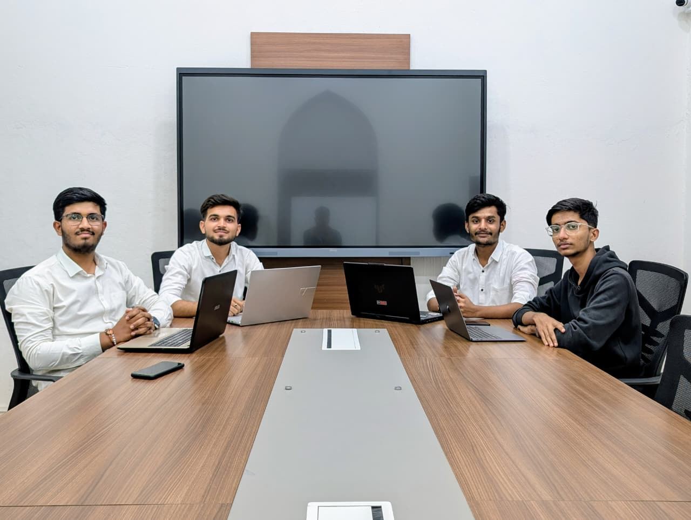

Our Story
Acoustic Reef was born from a simple question: Why should reef monitoring be restricted to well-funded research institutions?
In 2024, our team—the Blue Guardians—came together as a diverse group of students passionate about marine conservation and AI, frustrated by the accessibility gap in ocean science.
We discovered that while acoustic monitoring technology existed, it remained locked behind expensive equipment, complex software, and specialist expertise. Meanwhile, coral reefs worldwide were dying faster than scientists could monitor them.
So we built Acoustic Reef—a free, instant, AI-powered reef health analyzer accessible to anyone with an internet connection and an audio recording.
